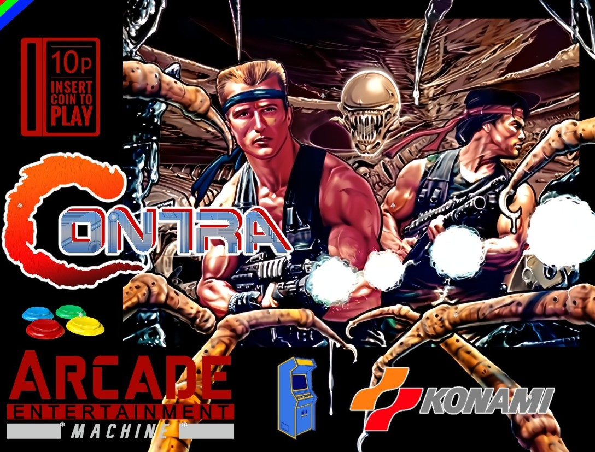

Hablar de Contra es hablar de una época en la que los videojuegos no perdonaban errores. Cada enemigo, cada salto y cada proyectil exigían atención total. No había espacio para distracciones, y justamente por eso cada avance se sentía ganado.
Uno de los grandes méritos del juego fue su ritmo. Contra no daba tregua, pero tampoco se sentía injusto. Era rápido, intenso y exigente, pero al mismo tiempo te enseñaba a mejorar a través de la repetición. Perder era frustrante, sí, pero también era una invitación a intentarlo una vez más.
La dificultad que marcó una generación
Muchos jugadores recuerdan Contra por su dificultad legendaria. Sin embargo, esa dificultad no era gratuita. Formaba parte de la identidad del juego. Cada fase tenía enemigos colocados de forma estratégica, obligando al jugador a aprender patrones y reaccionar con precisión.
Esto convirtió a Contra en una experiencia memorable. No era solo disparar; era sobrevivir, adaptarse y dominar el escenario. Esa mezcla de acción y tensión fue la que lo hizo inolvidable.
Dato retro
Una de las razones por las que Contra se volvió tan famoso fue por el legendario “código Konami”, que daba vidas extra y se convirtió en parte de la cultura gamer.
El cooperativo: caos, risas y coordinación
Jugar Contra solo era desafiante. Jugarlo con otra persona era otra historia. El modo cooperativo añadía emoción, estrategia y también bastante caos. Coordinar disparos, avanzar juntos y sobrevivir a la pantalla llena de enemigos convertía cada partida en una experiencia intensa y divertida.
Esa experiencia compartida es una de las razones por las que Contra sigue vivo en la memoria de tantos jugadores. No era solo un juego difícil: era un juego que generaba historias.
Por qué sigue siendo recordado hoy
En una época actual donde muchos juegos ofrecen ayudas, checkpoints generosos y experiencias más guiadas, Contra representa una filosofía distinta: la recompensa de superar un reto real.
Por eso sigue siendo brutal. Porque aún hoy transmite intensidad, carácter y una sensación de logro que pocos juegos consiguen replicar con la misma fuerza.
← Volver al blog